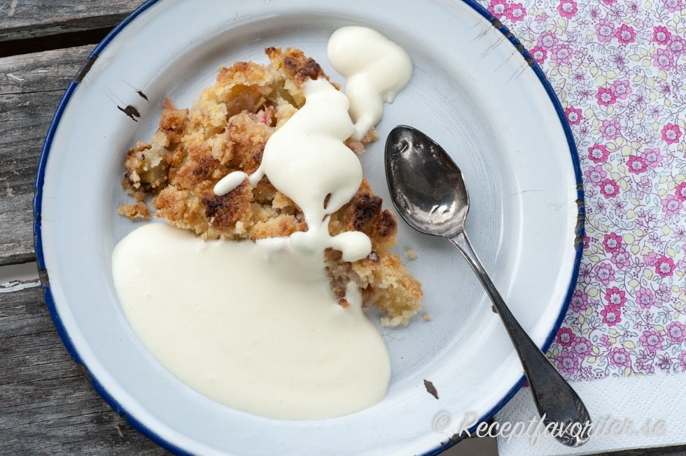

Mängd:
6 - 8 portioner
Du behöver:
- 3 stycken 30 cm långa stora stjälkar rabarber
- 1 dl socker
- 1 tsk vaniljsocker
- 1 tsk maizena (valfritt)
Smuldeg:
- 2 dl vetemjöl
- 1 dl grahamsmjöl eller havregryn
- 4 tsk socker
- 150 g smör eller margarin
Gör så här:
- Sätt ugnen på 200 grader.
- Skala ev. grov rabarber med en potatisskalare. Strimla rabarbern i ca 1 cm bitar eller finare.
- Smörj en ugnssäker form med 1 msk smör eller margarin.
- Lägg rabarberbitarna i formen.
- Blanda socker och vaniljsocker samt ev maizena. Strö över rabarbern.
- Gör smuldegen till rabarberpajen: lägg mjöl, socker och smör (margarin) i en skål. Arbeta med fingertopparna eller en gaffel samman mjölblandningen till en grynig massa.
- Täck rabarbern med smuldeg.
- Baka rabarberpajen i mitten av ugnen tills den fått ljusbrun färg och rabarbern mjuknat, ca 20-30 minuter.
Tips:
Severa med köpt eller hemgjord vaniljsås, vaniljvisp eller vaniljglass till fika, efterrätt eller dessert.Du kan strö över någon tsk maizena eller potatismjöl för en rabarberpaj som är fastare i konsistensen.